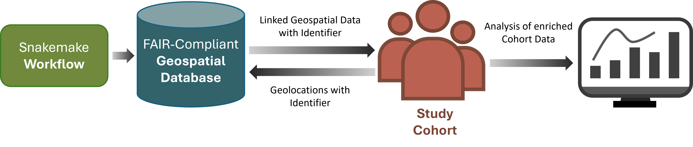

CLUES: A Comprehensive Workflow for Integrating Geospatial Data in Health Research
About
CLUES (Climate, Urbanicity, Environment and Society) is a modular workflow that enables researchers to systematically integrate open-access geospatial environmental data with health research datasets at the individual-level. It automates the download, harmonisation, and management of data across climate, built/natural environment, air pollution, and regional socioeconomic conditions.
Key Features - Automated data retrieval from multiple open-access geospatial sources - Standardised harmonisation of spatial/temporal coverage, projections, and file types - Modular integration with health cohort datasets at the individual level - Extensible architecture for adding new environmental variables over time - Adherence to FAIR (Findable, Accessible, Interoperable, Reusable) and data protection principles

Getting started
Set up a virtual python environment:
python -m venv cluesEnv
Activate virtual environment:
Linux:
source cluesEnv/bin/activate
Windows:
cluesEnv\Scripts\activate
Install dependecies:
pip install -r requirements.txt
Note: snakemake must be installed separately
*pip install snakemake *
For more details, see the Getting Started guide.
Configuration Management
The CLUES workflow operates with a modular configuration system that defines how the geospatial database is generated, updated, and customised. It is structured around: - A general workflow configuration file - Multiple source-specific configuration files
Together, these configurations ensure accurate data acquisition, seamless integration, and reproducible processing.
The configuration files are stored in the config and config_sources folders.
General workflow configuration
Stored in the config/ folder, this file (config.json) defines: - Where to store the downloaded database - The spatial and temporal coverage of interest (e.g., bounding boxes and time periods) - Which environmental data to download - Rules for updating or extending existing databases
The config/ folder also contains the bbox.json file, which is a collection of different bounding boxes for different areas.
Source-Specific Configuration Files
Each environmental data source has its own configuration file stored in the config_sources/ folder. These files are modular and self-contained, making it easy to: - Specify which datasets and variables to download from each source - Define source-specific metadata (e.g., URLs, file structure, variable names) - Choose whether to apply neighbourhood-level processing, and if so: - Select the processing type: mean, std, or Zevenbergen-Thorne - Set the radius of the neighbourhood (in meters)
You can add or modify environmental data sources by simply adjusting the relevant config file, without affecting the rest of the system.
For more details, see the Configuration Files guide.
Credentials for Third Party Accounts
Some sources require API credentials:
- Copernicus (Climate/Atmosphere data):
- Register and obtain credentials: https://cds.climate.copernicus.eu/how-to-api
- Create two files in the path specified by configs_assets_folder in config.json:
- cdsapirc_atmo.sct
- cdsapirc_climate.sct
-
Replace ??? with your actual credentials in the configs_assets_folder folder defined in the config.json.
-
NASA (Normalized Difference Vegetation Index (NDVI)/Enhanced Vegetation Index) (EVI) data:
- Register at: https://www.earthdata.nasa.gov/
- Create the file nasa.sct that contains token: your_nasa_token.
For more details, see the Third Party Accounts guide.
Assets (Geospatial Features)
The geospatial features to be downloaded are defined in individual JSON files in the config_sources/ folder. Each file corresponds to a specific data source. You can customise the downloaded variables by editing the relevant JSON file and removing variables you do not want.
A complete list of all available geospatial products, including their source and characteristics is provided. This serves as a reference for users to understand what data is included in the CLUES framework and to guide customisation of the source-specific configuration files.
For more details, see the Geospatial Data guide.
Running the Workflow
Once the setup and configuration is complete, run the workflow using:
snakemake -s workflows/snakefile --cores 16 -p --rerun-incomplete --latency-wait 60
Anticipated result
Downloaded files are stored in the location specified in the config.json file. Log files will be created for each download task. If the workflow fails, (e.g., due to a temporary server issue), review the corresponding log files. The workflow needs to be restarted. Common issues such as storage limitations need to be resolved manually before re-running the workflow.
For more details, see the Anticipated Results guide.
To link the downloaded environmental data to the geographic locations of study participants, run the scripts as described in the Data Linkage scripts.
Usage policies
All data integrated by CLUES are open-access and publicly available. However, users must comply with the usage terms of each primary data source. Each dataset is subject to its own licensing and access policies. Please ensure you review and follow these terms before using the data in research.
For more details, see the Data usage guide.
License and Citation
License
MIT License Copyright (c) 2025 BIH-DMBS
For more details, see License(workflows/LICENSE).
Citation
If you use CLUES in your work, please cite: Jentsch M, et al. (2025). CLUES: …